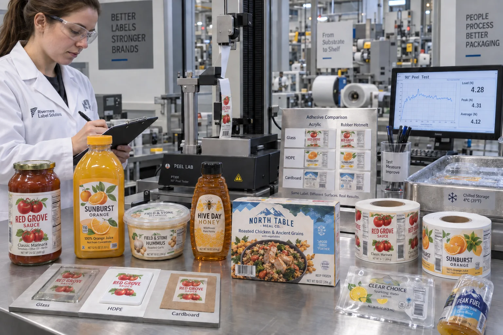

Short answer
Acrylic adhesives often suit clear-film appearance, aging, heat and chemical exposure. Rubber-based hotmelts often suit high initial tack, cold application and difficult surfaces. That is a starting pattern, not a substitute for the exact product data sheet and package trial.
Buyers sometimes ask for “the strongest permanent glue.” If I quote the highest peel number without asking about the bottle, I can still lose the job on the production line. Strength measured on clean stainless steel is not the same as reliable hold on a cold HDPE tub with mold-release residue.
Typical tendencies, not absolute rules
| Property | Acrylic tendency | Rubber hotmelt tendency |
|---|---|---|
| Initial tack | Moderate to high, formulation-dependent | Often high and fast |
| Clear-label appearance | Often very good | Some grades can show haze or color |
| Heat / UV aging | Often strong | May need product-specific review |
| Cold application | Special all-temperature grades exist | Many grades provide strong cold grab |
| Converting | Can offer clean die cutting | Softer systems may ooze or build on tools |
A composite sauce-and-chiller decision
This is a composite planning example. A food company wants one adhesive for a glass sauce jar, a chilled PP hummus tub and an HDPE honey bottle. Combining volumes would reduce purchasing complexity, so the request makes sense.
The clear acrylic construction looks best on glass and converts cleanly. The rubber hotmelt sample grabs the cold textured tub faster. On the squeezable honey bottle, face-stock flexibility and label shape matter as much as chemistry. One adhesive may pass all three, but forcing that outcome before testing can turn a simple SKU list into three different edge-lift complaints.
The honest recommendation is to compare consolidation savings with the cost of weaker performance. Sometimes two constructions are cheaper than one universal compromise.
Initial tack, peel and shear are different
Initial tack is immediate grab. Peel adhesion measures force during removal under a defined test. Shear reflects the adhesive's internal resistance to sliding. A soft adhesive can wet a rough surface well yet move under heat or label tension. A high-peel result does not automatically prevent edge lift around a tight radius.
Avery Dennison's adhesive glossary separates these terms and also defines mandrel hold, wet-out, minimum application temperature and service temperature. Those definitions are more useful than one marketing word such as “industrial.”
Food packaging adds a regulatory boundary
Food-contact status belongs to the exact construction and intended contact. An adhesive applied outside a bottle behind a functional barrier is not the same case as a label or sticker that can touch food directly. Request a product-specific compliance statement and have the responsible food business review the finished package.
Do not assume “acrylic,” “rubber,” “water-based” or “hotmelt” proves food-contact suitability. Chemistry names describe technology, not the full regulatory assessment.
Factory-side view
The most aggressive sample can create the next problem
High grab feels convincing in a hand test. It may also reduce repositioning, increase matrix stripping difficulty or damage a reusable container during removal.
I want enough adhesion for the package journey, not the highest number we can put on a quotation.
Trial the complete construction
- Use production containers from more than one molding or supply lot.
- Clean only as the real line cleans; do not create a laboratory-only surface.
- Apply at the actual temperature and speed.
- Check immediate grab and ultimate adhesion after dwell.
- Inspect tight edges, seams and curved areas.
- Expose samples to cold, heat, water, oil and abrasion as required.
- Evaluate converting waste and machine dispensing as well as bottle hold.
Review the official Avery Dennison adhesives glossary and its pressure-sensitive adhesive overview. For surface-specific problems, continue with Labels for HDPE and PP Containers.
Frequently asked questions
Is acrylic adhesive better than rubber adhesive?
Not in every application. Acrylic systems often offer good clarity, aging, heat and chemical resistance, while rubber-based hotmelts can offer strong initial tack and cold-surface performance. Exact products vary.
Which adhesive is best for chilled food labels?
Both technologies include cold-use products. Choose from the exact application temperature, surface, moisture, label size, service life and supplier test data.
Can the same adhesive be used on glass and HDPE?
It may work, but glass and HDPE have different surface energy and contamination risks. Test the complete construction on both actual containers.
Does permanent mean the label can never peel?
No. Permanent describes intended bond behavior under specified conditions. Surface contamination, low temperature, curvature, moisture or a stiff face can still cause failure.
Related label guides
- Minimum Application vs Service Temperature for Labels
- Clear Label Sensors, Gaps and Eye Marks: Machine Guide
- Roll Label Splices: Acceptance and Machine-Run Guide
Review the complete label construction
Send package photos, material details, finished label size, quantity by artwork, storage conditions and application method. We can review fit, material and production details before preparing a quote and digital proof.